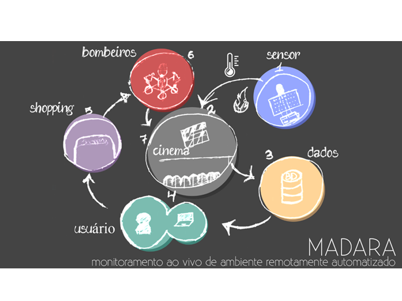

O Projeto MADARA (Monitoramento Ao vivo de Ambiente Remotamente Automatizado) tem o foco de automatizar o monitoramento do clima de ambientes fechados.
Por se tratar de um sistema automatizado, o MADARA promove mais segurança, agilidade e precisão no processo.
Requisitos para o sistema:
- Conexão estável com a internet;
- Um banco de dados;
- Uma placa Arduino Uno;
- Um sensor Lm35.
O sistema será instalado em um local estratégicamente posicionado para que a captura dos dados tenha maior precisão, minimizando assim, a margem de erro.
Arquitetura:

1 - O sensor é instalado na sala de cinema;
2 - O sensor capta os dados de temperatura e umidade do local;
3 - Os dados são enviados e armazenados;
4 - O usuário consegue consultar esses dados;
5 - Caso a temperatura esteja elevando rapidamente, um alerta é emitido para o shopping;
6 - O shopping pode verificar e tomar as medidas administrativas cabíveis;
7 - Caso tudo esteja em ordem, a sessão pode iniciar.